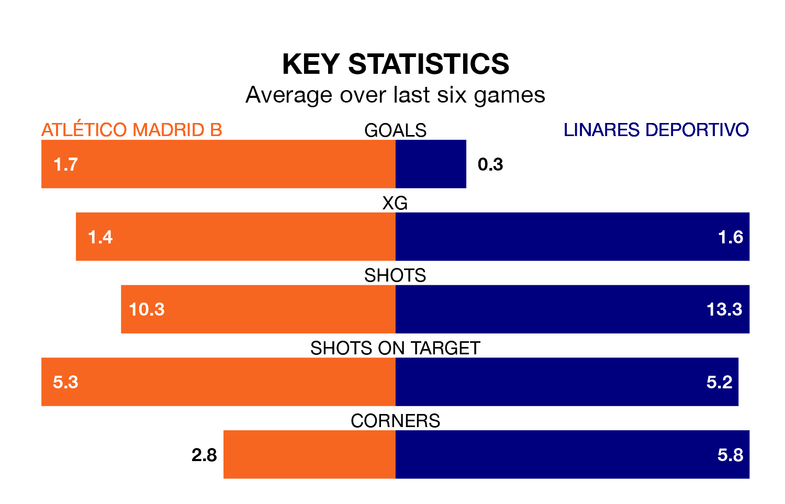

Atlético Madrid B are heavy favourites to keep all three points at home in Sunday's late kick-off against Linares Deportivo.
Atlético Madrid B, who sit 13th in Primera Division RFEF Group 2 with 18 games played, are priced at 1.6 to seal victory at Miniestadio Cerro del Espino.
Sitting four places and eight points behind them in the table, Linares Deportivo are 5.5 to win with *Betting Company*, while the draw is at 3.3.
With 12 goals in 18 games so far this season, Linares Deportivo are scoring at below the league average rate with 0.7 goals per game. And they are conceding more than average, letting in 25 goals at a rate of 1.4 per game.
Atlético Madrid B, meanwhile, are above average scorers, with 1.5 goals per game, compared to a league average of 1.2. They have conceded 1.6 goals per game.
The hosts are in mixed form in Primera Division RFEF Group 2, with two wins and three draws from their last six games.
With no wins and two draws over that period, the away team's form is much worse – they have taken two points from 18, compared to Atlético Madrid B's nine.
Atlético Madrid B's last match was on January 2, a 1-1 draw against Real Murcia.
Linares Deportivo drew 0-0 with CD Atlético Baleares last time out, on January 3.
Updated: 11:31, 09/01/24